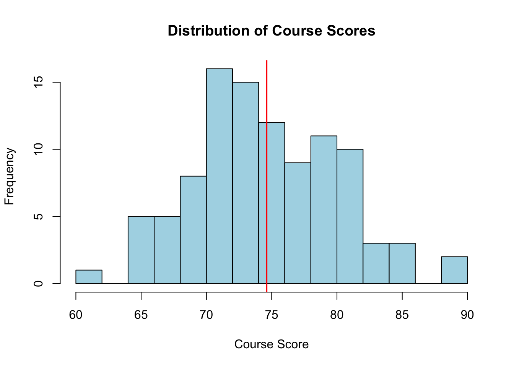
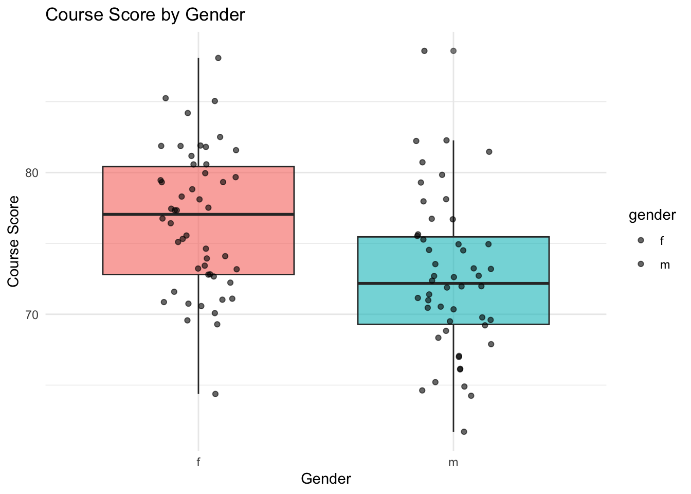
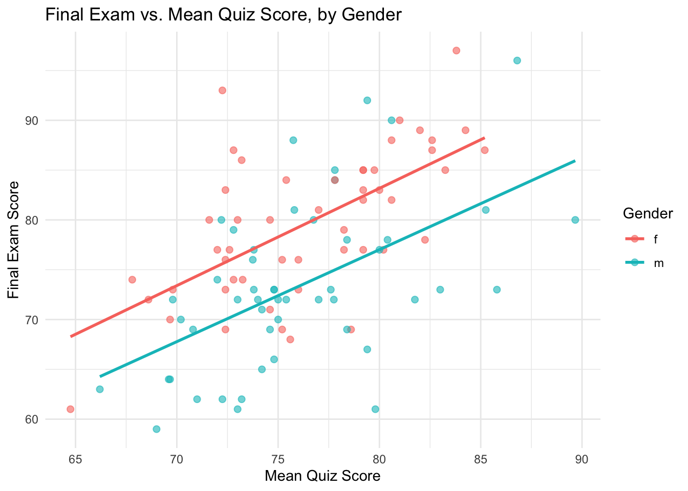

Throughout this unit we will use one running example to introduce the basic building blocks of R: vectors, strings, special values, matrices, data frames, lists, functions, file I/O, and graphics.
The mission: a class of 100 students has taken graded work in three categories: five quizzes, two tests, and one final exam, each scored out of 100 points. A student’s course score is a weighted average of the category means – quizzes count 30%, tests count 30%, and the final counts 40%. To make the simulated data realistic, a student’s test and final scores are generated from their quiz performance by a simple linear regression, with a different intercept for female and male students, and a few quizzes are missing entirely (a student who did not sit that quiz). We want to
work out the calculation step by step for one student,
package that calculation into a reusable function,
apply the function to every student to get a full set of results, and
present those results as a table and as plots.
This mirrors how real data-analysis code is usually built: explore on one case, generalize into a function, then apply and report.
1.2 Generating an artificial score dataset
1.2.1 Vectors: recording quiz scores
Each quiz, across all students, is naturally stored as a vector. We simulate a class of 100 students, five quizzes scored out of 100, using rnorm and clipping the result to a valid 0-100 range with pmin/pmax:
We could type out "Quiz1", "Quiz2", … by hand, but paste0 builds such labels programmatically – a habit that pays off the moment there are 40 quizzes instead of 5:
With 100 students, typing out individual names is not realistic either. sprintf generates zero-padded IDs like "S001", "S002", … in one line – exactly the kind of job it is built for:
students <-sprintf("S%03d", 1:n)head(students)
[1] "S001" "S002" "S003" "S004" "S005" "S006"
1.2.3 Simulating the tests and the final using vectorized math
In a real class, a student’s test and final scores are not independent of how they did on the quizzes. We simulate that by treating each student’s mean quiz score as a predictor in a simple linear regression.
This is a great place to demonstrate vectorized calculations in R. Instead of writing a for loop to calculate each student’s score one by one, we can simply add and multiply whole vectors of length 100 together. R aligns the elements automatically:
1.2.4 Matrices: combining all the scores (Complete Data)
Before we simulate absences (missing values), let’s bind the quiz, test, and final columns together into one complete matrix. It will have one row per student and one column per graded item.
scores <-cbind(quiz.mat, Test1, Test2, Final)colnames(scores) <-c(quiz.names, test.names, "Final")rownames(scores) <- students# Here is our complete dataset before any missing valueshead(scores)
In reality, students occasionally miss a quiz. Let’s randomly drop about 5% of the quiz scores by assigning them the special value NA (Not Available).
miss.rate <-0.05# We only want to introduce NAs into the first 5 columns (the quizzes)for(j in1:ncol(scores)) { scores[sample(n, round(n*miss.rate)), j] <-NA}head(scores,10)
We will rely on na.rm = TRUE later so that a missing quiz simply drops out of a student’s quiz average, rather than returning NA for their whole course score.
1.2.6 Data frames: adding names and gender
A data frame lets us combine columns of different types – here, the students’ names and gender alongside their (numeric) scores – into a single table:
We want to write a reusable function that takes a single student’s record (a row from our data frame) and calculates their overall course score.
To make this function robust, we will use grep internally. grep searches for a text pattern in a vector of names. By having the function dynamically search for columns starting with “Quiz”, “Test”, or “Final”, we don’t have to hardcode column positions.
compute.course.score <-function(student_record) {# Extract all the column names from the student record col_names <-names(student_record)# Use grep to find the indices of specific categories quiz.cols <-grep("^Quiz", col_names) test.cols <-grep("^Test", col_names) final.col <-grep("^Final", col_names)# Calculate the mean for each category, ignoring NAs quiz.mean <-mean(as.numeric(student_record[quiz.cols]), na.rm =TRUE) test.mean <-mean(as.numeric(student_record[test.cols]), na.rm =TRUE) final.score <-as.numeric(student_record[final.col])# Calculate the weighted course score course.score <- (0.3* quiz.mean) + (0.3* test.mean) + (0.4* final.score)# Bundle the results into a named vectorc(Quiz = quiz.mean, Test = test.mean, Final = final.score, course.score = course.score)}
Let’s test this function on one student—specifically one who missed a quiz, to see the na.rm = TRUE handling in action.
Quiz Test Final course.score
78.250 82.000 79.000 79.675
1.4 Applying the Function to Every Student
Now that we have a function working for one student, we can apply it across the entire class. The apply function is perfect for this: it takes our roster data frame, loops over either rows (1) or columns (2), and executes our custom function.
# apply over margin 1 (rows)all.results <-t(apply(roster, 1, compute.course.score))# Combine the original demographic info with the calculated scoresresults <-cbind(roster[, c("name","gender")], all.results)results
1.4.1 Saving and reloading the results
The results table is worth keeping. A data frame can be written as a plain csv file for spreadsheets, or saved as an .RDS file to preserve it exactly (including the gender factor) for future R sessions:
A quick histogram shows the distribution of course scores, with a vertical line marking the class average:
hist(results$course.score, breaks =15, col ="lightblue",main ="Distribution of Course Scores", xlab ="Course Score")abline(v =mean(results$course.score), col ="red", lwd =2)

1.5.2 ggplot2
ggplot2 builds a comparison across gender declaratively, by mapping columns of results to visual properties and layering geometries with +. Here the boxplot is enhanced with the individual course scores jittered on top:
library(ggplot2)ggplot(results, aes(x = gender, y = course.score, fill = gender)) +geom_boxplot(show.legend =FALSE, alpha =0.6) +geom_jitter(width =0.15, size =1.5, alpha =0.6) +labs(title ="Course Score by Gender",x ="Gender", y ="Course Score" ) +theme_minimal()

We built a gender-specific intercept into the simulation when generating the final exam scores; a scatter plot of the final versus each student’s mean quiz score, with a fitted line per gender, should reveal it:
ggplot(results, aes(x = Quiz, y = Final, color = gender)) +geom_point(size =2, alpha =0.6) +geom_smooth(method ="lm", se =FALSE) +labs(title ="Final Exam vs. Mean Quiz Score, by Gender",x ="Mean Quiz Score", y ="Final Exam Score", color ="Gender" ) +theme_minimal()
`geom_smooth()` using formula = 'y ~ x'

The two fitted lines are roughly parallel but vertically offset – exactly the intercept difference we built into b0.final when simulating the data.
1.5.3 gt
Finally, gt turns a group summary of results into a polished report table: the average of each category mean and the average course score, by gender.
library(gt)summary.by.gender <-aggregate(cbind(Quiz, Test, Final, course.score) ~ gender, data = results, FUN = mean)summary.by.gender |>gt(rowname_col ="gender") |>tab_header(title ="Category Means and Course Score by Gender",subtitle ="Averaged across all students in each group" ) |>fmt_number(columns =-gender, decimals =1) |>cols_label(Quiz ="Quiz Mean",Test ="Test Mean",Final ="Final Exam",course.score ="Course Score" ) |>tab_stubhead(label ="Gender")